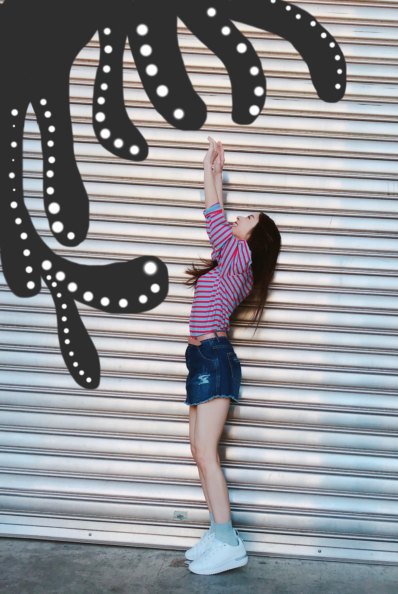
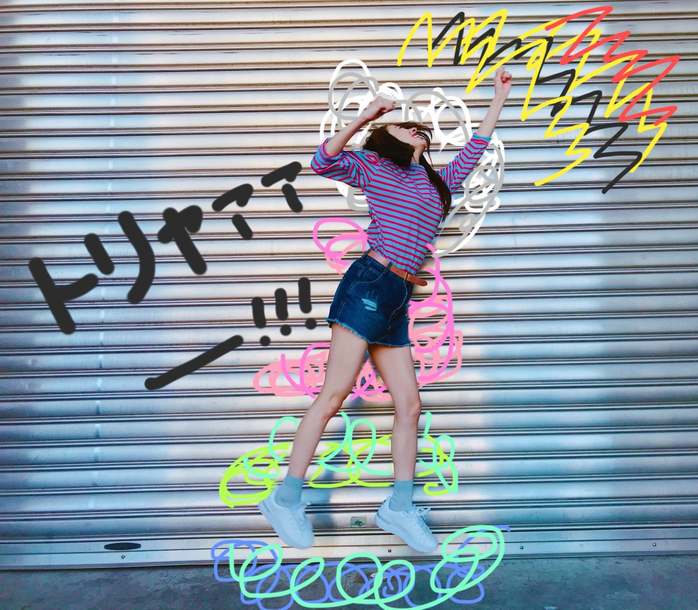
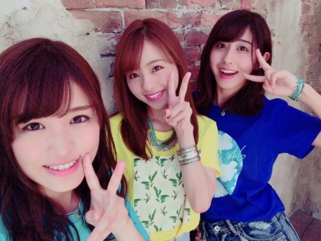
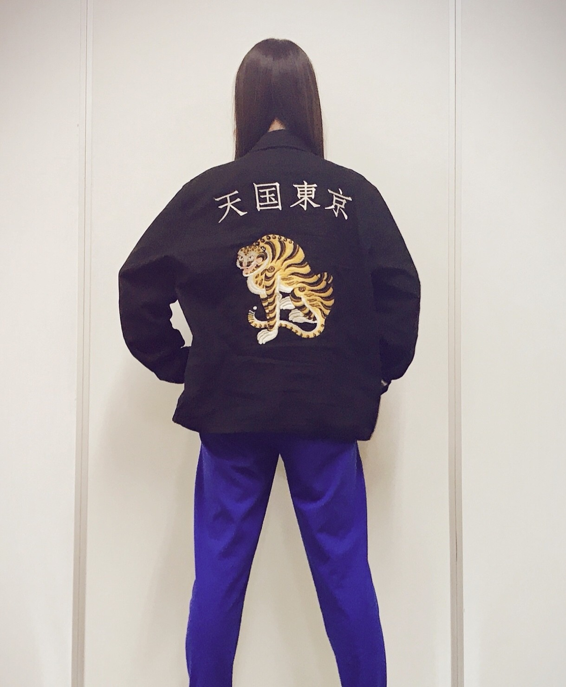

お疲れ様です！
昨日は個別握手会。
来て下さったファンの皆様、ありがとうございます♡
もうすぐ46時間TVが始まりますね！
今年はどんな名場面が生まれるだろう。楽しみっ。
それに46時間TVのグッズがありまして、その中でも「推しメンマフラータオル」と「軍団グッズ」はオススメです♡
推しメンマフラータオルは、メンバーそれぞれがデザインしているのでレア。
是非私のタオルもチェックして下さると嬉しいです♡
それに軍団グッズ...私は勿論チューリップとしてなんですが、、、超可愛いです。笑 特にタオルだったかな、、「や ら し い 目 で 見 な け れ ば」の文字だけで癒されます(^_^*)
タコだぁぁぁぁぁぁぁ！！！！

なんやこれ。

落書きしてしまいました。笑
かりんのファンの皆様へ。
卒業セレモニー、素敵なお花ありがとうございます。凄く嬉しかったです！かりんと同じでファンの皆様も本当に優しいんですね♡

では♡
